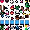

Projects
You can access them in my Itch.io page, available in the link tray above. Hope to see new entries made in Unity or even smaller ones writen in pure C++.
Learning Unity Essentials
Unity 2021.3 (LTS)
🌐 Link to GitHub repoWatch me learn how to write clean, reusable code in Unity. I do not aim to release this project as a game. It is just a place where I can freely test my knowledge and get the hang of the engine after transitioning from Godot.
 (Support my work by buying it in my ItchIo page. It's only 1 dollar!)I Dice Fish
Godot Engine 4
🏆 Won place #117 of #6076 entriesMade for the GMTK 2022 Game Jam, in less than 48 hours. Includes capturing mouse movement and mouse events, handling non-repeatable voice lines & widescreen support.
Anatak
Godot Engine 4
Endless-runner with a rythym-like combat. Made in less than 10 days. Includes parallax, saving and loading in JSON, newgame+, adaptative knockback, screenshake & animation switching.

Less relevant projects include

PlanTODO
React, TypeScript and CSS modules
First big project I created during my time as a front-end web developer. Includes interfaces, saving and loading browser data in JSON, 2 layers deep arrays & some CSS witchcraft.